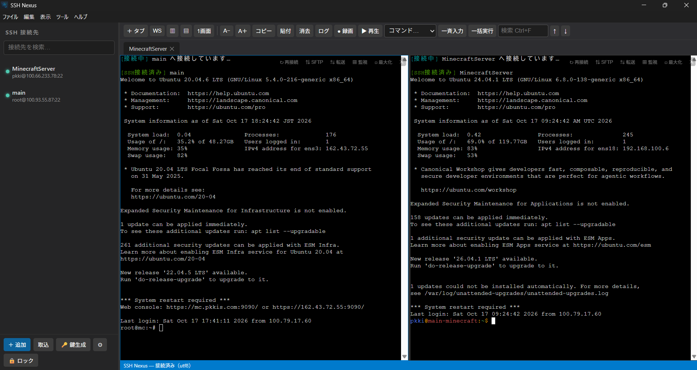
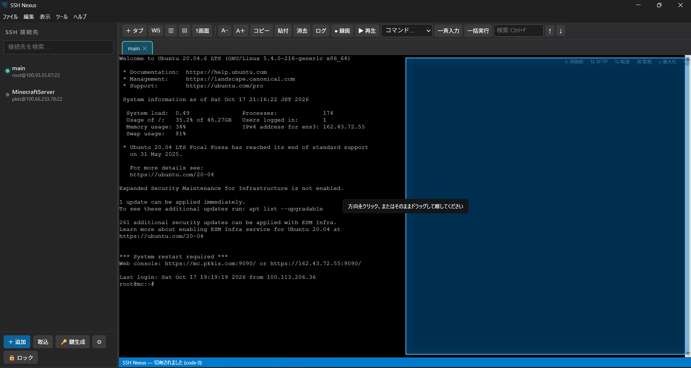

Tabs and split panes
Work with multiple sessions in VS Code-style tabs. Split horizontally, vertically or into nested panes.
SSH NEXUSManage SSH sessions, SFTP and port forwarding in one window. Built around familiar Windows interactions and practical security for daily operations.

From finding a host to working across servers, transferring files and reconnecting after a failure窶蚤ll under one consistent interface.
Work with multiple sessions in VS Code-style tabs. Split horizontally, vertically or into nested panes.
SSH NEXUSUpload, resume, verify and remotely edit files without leaving the terminal.
SSH NEXUSSee whether DNS, TCP, SSH or authentication failed, then retry immediately.
SSH NEXUSConfirm SHA-256 fingerprints on first use. Changed keys are blocked automatically.
SSH NEXUSReplay terminal sessions with their original timing and PTY geometry.
SSH NEXUSSave tabs, pane layouts and hosts, then restore an entire working context.
SSH NEXUSA short hold reveals left, right, top and bottom targets. Click a direction or keep dragging. SSH Nexus creates a clear two-pane layout without breaking the live session.

These screens come from the running Windows application: SFTP, session replay, Windows Hello and the security settings you use every day.
Review terminal activity while preserving timing and tmux/byobu geometry.
Browse, upload, cancel, resume and verify transfers with SHA-256.
Unlock at launch using the Windows security prompt.
Manage encrypted backups, recovery passphrases and trusted host keys.
Hostnames, usernames, notes, credentials, known hosts, workspaces, recordings and audit records are encrypted. Windows Hello handles normal unlock; a strong recovery passphrase is reserved for emergencies.
Yes. SSH Nexus imports Tera Term INI history and TTL macros, PuTTY sessions and OpenSSH config files.
Yes. Saved credentials remain in the encrypted vault and are used when you select a host.
Use the recovery passphrase of at least 16 characters that you set during initial setup.
Install it for your Windows user and manage saved hosts from one place.